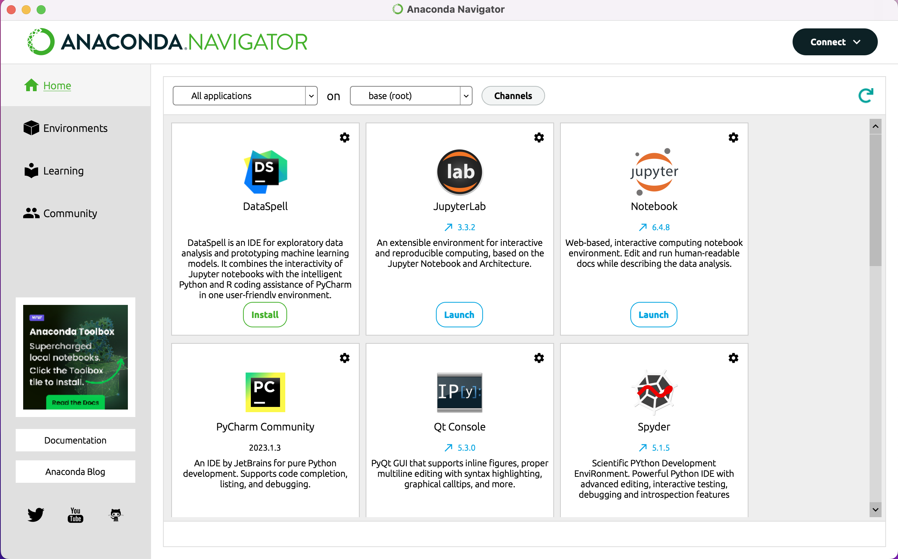
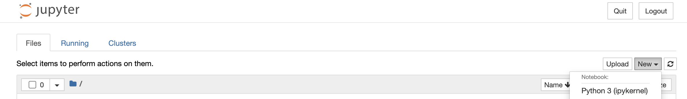
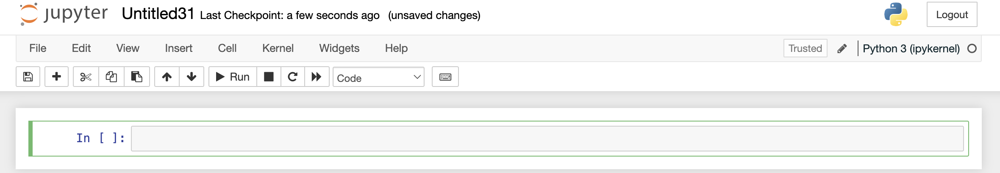
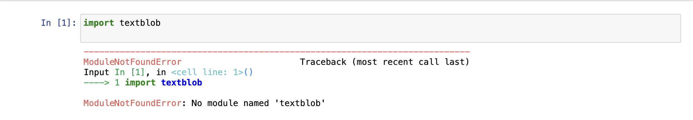
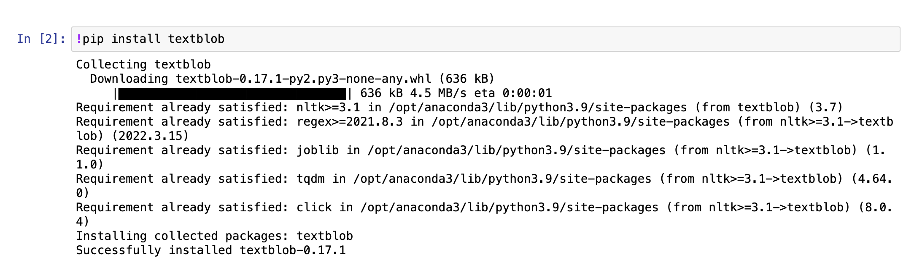
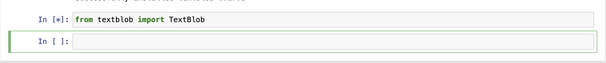

Introduction, Installation, and Anaconda
Last updated on 2024-03-12 | Edit this page
Overview
Questions
- How do you get started coding with the Python programming language?
- What are the basic principles of coding and using modules in Python?
- What is a Jupyter Notebook and how can we use it to study coding and test our code?
- How can we use the Python module Textblob to perform some basic text analysis?
Objectives
- Understand what Python is, and the difference between coding and programming.
- Preview the objectives of the entire course
- Learn to install Anaconda
- Understand what Jupyter Notebooks are
- Learn to install a Python module within Jupyter notebooks
Given the short length of this course, this course will convey the fundamentals that will carry you the furthest in your goal to learn coding. We will cover the following areas in this lesson:
- How to access Python on your machine through Jupyter Notebooks
- How to install a Python module
- How to prepare textual data for automated analysis
- Basic fundamentals of interpreting the documentation and code within a Python module and tailoring it to your own needs.
- How to write simple commands using the language of a Python module in order to analyse a text.
- How to export the results of a Python script into another file format
What is Python?
This course will teach you the fundamental principles of coding and automatically analysing textual data in the programming language Python. It will provide you with a basic foundation of knowledge on programming languages, data, and modules that you can carry away to apply to your own projects. It is not intended as an exhaustive study of the Python language itself, but instead is a preparatory course which will provide you with the tools you need to begin the process of learning how to code.
This course teaches coding principles using the Python programming language, which is a very popular general purpose programming language. It is the language most commonly used in the Digital Humanities, and has many powerful modules (a set of functions which perform specific tasks) designed to conduct advanced analysis of textual data (including modules for NLP, or Natural Language Processing). It is different from another programming language that is popular in both the Digital Humanities and the Sciences, R. R is a more specialised language which was primarily developed for statistics and producing graphical visualisations of data. It is common for people working in Digital Humanities to work with both Python and R, so learning the fundamentals of one can help give you skills and knowledge to later extend to R.
What is the difference between coding and programming?
In this course we will focus on learning some basic coding skills. Coding is an integral part of programming: it involves writing the commands in a way that a computer can understand and execute. The primary difference between coding and programming is that programming involves writing full computer programs (as a part of software development). Such programs use code as the building blocks for software which is designed to solve a problem or perform a complex set of actions. One cannot become a programmer without learning how to write code.
When you write a line of code, you are writing instructions in a form which the computer (through the Python interpreter) can understand and execute.
Anaconda is a software distribution which includes the Python programming language as well as many modules and applications within a single installation. Today we will be installing Python using Anaconda, and then using an application within it, called the Navigator, to access some of these features.
Anaconda can be installed easily by following the tutorials below (specific to each operating system):
How to Access Jupyter Notebooks
When you open the Anaconda Navigator application you will be able to see a selection of applications from which to choose, one of which is Jupyter Notebooks. Click ‘Launch’.  A webpage will open with a list of the files you have in your local folder. To the right you will see a dropdown button, ‘New’. You then can click on ‘Python 3 (ipykernel)’ to open a new Jupyter Notebook. 
This will create a new, empty Jupyter Notebook. This notebook is made up of cells in which you can write, try out, and execute code. These notebooks are highly versatile and are the ideal environment for learning how to write code, as you can run the command and see the outputs right within the notebook. You can explore the different options and possible actions in the menu on the left.  We will be writing all of our code in this Jupyter Notebook. Be sure to save it (it will remain on your local hard drive) so that you can access and work with this code later.
Installing a Python Module
A ‘module’ in Python is a collection of functions that a software developer has put together in code, for a specific purpose. It is akin to a ‘library’ of instructions that a computer uses to perform certain actions. However, Python calls such libraries ‘modules’, not ‘packages’ or ‘libraries’.
In this course we will be using the module Textblob. While Anaconda comes with around 250 Python modules pre-installed, Textblob is not one of them. To see if a module is already installed, you can run the ‘import’ command in a cell: 
In this case, we will want to install the module. We run the following command within the cell: 
For those curious: the ! in the command tells Jupyter Notebooks that this is an action to be performed on your actual machine. ‘pip’ is Python’s package manager. Put together, they tell your computer to install the package that you tell it to install right after.
Once a package is installed, you need to import it to be able to use it in a Notebook. From the module ‘textblob’ we will import the object ‘TextBlob’: 
If successful, nothing will appear except a new cell in your notebook.